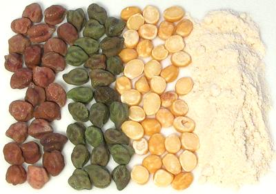

Chickpeas (Bengal / Desi type)

[Bengal Chickpeas, Kala Chana, Chana Dal, Bengal Gram (India); Shimbra
(Ethiopia)]
One of the most important crops in India, these chickpeas are closer to
the wild chickpeas of southeastern Turkey than are the familiar
Mediterranean (Kabuli) type. Desi is the preferred type in hotter
regions. Shown in the photo are red and green varieties
along with Chana Dal (split and peeled chana) and Besan or Gram Flour
(chickpea flour ground from the dal). Dal is used more than the whole
peas because it cooks much faster, important in a fuel poor country.
The red peas in the photo were around 1/4 inch in diameter and weighed
about 155 to an ounce, the green slightly smaller.
Dalia: [Pappulu, Bhuna Chana] This is roasted,
peeled and split Bengal Gram. It looks just like the unroasted Dal,
but is soft and easily ground. "Dalia" is the Gujarati name for this
dal, and the name by which it is sold in North America. This causes
a lot of confusion, because in the rest of India Dalia means broken
grain, particularly wheat.
More on Beans Peas & Lentils.
Buying:
All these forms can be found in markets
serving an Indian community. If your local market has only the red or
only the green in whole peas, not a problem, they taste the same.
Storing:
The whole chickpeas can be stored in a sealed
container away from light for about a year. The dal is also durable
and will last about a year. Over-aged beans and dal will not cook
soft.
Prep:
A cup (6-1/2 ounces) of dried chickpeas should
be soaked for about 8 hours in 3 cups of water with 2 t salt per cup
of beans (see Soaking / Brining Beans).
One cup will yield a little over 2-1/2 cups (14 ounces) of drained
beans. 1 pound of dry beans will yield 2 pounds soaked.
Cooking:
Soaked chick peas should be simmered for
about 3/4 hour to cook. Unsoaked dried beans will take up to 2-1/2
hours of simmering.
Besan / Chickpea Flour:
The flour, ground from the
dal, is used worldwide and found in most multi-ethnic markets, and
some supermarkets. Like whole wheat flour, Besan is prone to going
rancid. It should be purchased from a source with high turnover,
be kept in a tightly sealed container, and replaced every 6 months
or so.
bp_chicbz 100207 - www.clovegarden.com
© Andrew Grygus - agryg@clovegarden.com - Photos on
this page not otherwise credited are ©
cg1.- Linking to and non-commercial use of
this page permitted.